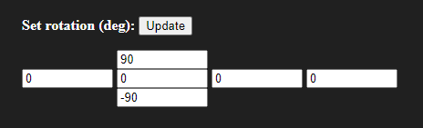
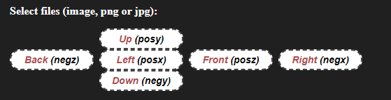

Rendering Skybox Panoramas With POV-Ray
Written on 2025-05-15 14:28 Never Edited
Recently I've had a craving for retro-looking skyboxes in modern game engines, and started investigating ways to render them in POV-Ray, as it's free and easily accessible for all operating systems.
After some VERY short web surfing session, I found my answer in an old POV-Ray forum post's replies. So instead of writing a post about it, i'm gonna make a knowledge article!
Preparing and Rendering the Scene
Remove your scene's camera, but remember its position for later. No need to remember the FOV, as skybox rendering requires an FOV of 90.
Place the following code anywhere in your scene, and replace the "X,Y,Z" with your original camera's position.
Make sure the target resolution's aspect ratio is 1:1 and add the command line options +kfi0 +kff5 to the render settings.
I personally use 1024x1024 as it seems to give enough detail without making scenes slower to render, remember a lot of scenes use expensive
radiosity and even the most modern CPUs struggle with it.
Start rendering, and once it's done you will see 6 PNG files appear in the same directory as your .pov file. Each output file is the .pov file's name,
suffixed by the frame number and ".png".
The frame number mapping is commented above each frame declaration in the code.
You can now use these files in software like Unity, or hell even old games like Half-Life 1. To use them in Blender or Godot you must turn these into a panorama first, explained in the section below.
Converting to a Panorama
I've been recommended this website to convert 6 sided cubemaps to a panorama, so this is what we are going to use.
First of all, set all these fields to 0 as otherwise the panorama will not render correctly.
Next, upload your files using the frame mapping in the code above.

The output image should be fine, you can choose to render it as a sphere too for preview.
I used a simple sky scene for this, and the results look great!